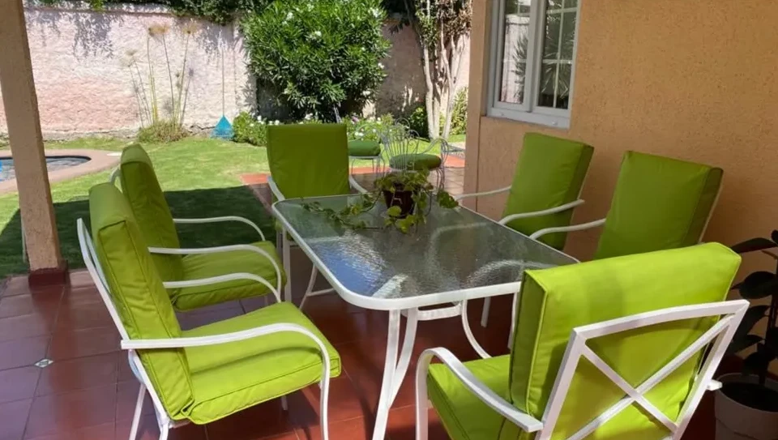

Trabajar sentado varias horas seguidas en una silla dura o mal acolchada tiene un costo real: dolor de espalda, cansancio y menor concentración. Los cojines para sillas de escritorio son una solución práctica y económica que puede mejorar significativamente la comodidad de tu jornada. Cuando se confeccionan a medida, el resultado es todavía mejor.
En Sastrería La Reina hacemos cojines para sillas de escritorio con el tamaño exacto de tu silla, el relleno que necesitas y la tela que mejor se adapta a tu espacio y uso.
¿Para qué sirve un cojín en una silla de escritorio?
Las sillas de escritorio, especialmente las de madera, metal o plástico duro, no tienen ningún acolchado. Después de un rato, el cuerpo empieza a sentir la presión sobre los isquiones y la espalda baja. Un cojín bien hecho:
- Distribuye mejor el peso del cuerpo sobre el asiento
- Reduce la presión en los puntos de contacto
- Mejora la postura al elevar levemente la cadera
- Hace más cómoda una silla que de otra forma no lo es
Para cotizar el tuyo puedes contactarnos por WhatsApp o visitarnos en el taller en La Reina.
¿Qué diferencia a un buen cojín de escritorio de uno malo?
La mayoría de los cojines de escritorio que se venden en tiendas fallan en lo mismo: el relleno se aplana en pocas semanas y la funda no se adapta bien al asiento. Un cojín a medida resuelve los dos problemas:
- Relleno de alta densidad: no se aplana con el uso diario
- Medidas exactas: cubre el asiento completo sin sobrantes ni faltantes
- Sujeciones adecuadas: no se desplaza cuando te sientas o te levantas
- Tela resistente: soporta el roce diario sin desgastarse rápido
Telas recomendadas para cojines de escritorio
La tela del cojín de escritorio debe tolerar el uso diario y ser fácil de mantener limpia. Las más usadas en nuestro taller son:
Tela canvas o loneta
Resistente, fácil de limpiar y disponible en muchos colores. Es la opción más práctica para un escritorio de trabajo diario.
Terciopelo o velvet
Suave al tacto y con mejor aspecto visual. Ideal si la silla está en un espacio donde la estética también importa, como un home office cuidado.
Tela jacquard o estampada
Para quienes quieren que el cojín aporte decoración además de comodidad. Más delicada, pero visualmente más interesante.
Lino o algodón grueso
Natural, transpirable y cómodo. Buena opción si pasas muchas horas sentado en climas cálidos.
Puedes ver trabajos terminados en nuestro Instagram o en Facebook.

Tipos de relleno y su impacto en la comodidad
El relleno es lo que determina si el cojín va a durar o no. Para sillas de escritorio recomendamos:
- Espuma de alta densidad (35–45 kg/m³): mantiene la forma incluso con uso diario intensivo. Es la mejor opción para un cojín de asiento que se va a usar todos los días.
- Espuma + capa de guata: la espuma da firmeza y la guata aporta suavidad en la superficie. Buena combinación para jornadas largas.
- Guata siliconada sola: más blanda pero se aplana antes. Solo recomendable si la silla ya tiene algo de acolchado y el cojín es un complemento.
En el taller te asesoramos sobre qué densidad conviene según cuántas horas al día vas a usar el cojín.
Sujeciones: cómo evitar que el cojín se mueva
Un cojín que se desplaza constantemente es incómodo y termina sin usarse. Las sujeciones más efectivas para sillas de escritorio son:
- Cintas para amarrar al respaldo: las más comunes. Se atan a los barrotes o al marco de la silla.
- Elástico perimetral: abraza el asiento desde abajo. Práctico cuando la silla no tiene barras a las que amarrar.
- Velcro antideslizante en la base: para sillas con asiento liso donde el cojín tiende a resbalar.
Al pedir tu cojín cuéntanos el tipo de silla y te recomendamos la sujeción más adecuada.
¿Con funda removible o sin ella?
Para un cojín de uso diario, la funda removible es casi obligatoria. Te permite lavar la funda sin necesidad de cambiar todo el cojín, manteniendo la higiene sin complicaciones.
Confeccionamos ambas opciones: con cierre invisible o con velcro según la preferencia del cliente.
Cómo tomar las medidas de tu silla de escritorio
Para hacer el cojín a medida necesitas tres datos:
- Ancho del asiento: de lado a lado en la parte más ancha
- Largo del asiento: de adelante hacia atrás
- Grosor deseado: normalmente entre 4 y 8 cm para sillas de escritorio
Si la silla tiene forma irregular (trapecio, curva delantera, etc.), puedes traerla al taller o enviarnos una foto con las medidas y lo resolvemos.
👉 Escríbenos por WhatsApp para cotizar tu cojín
¿Cuánto dura un cojín de escritorio a medida?
Con espuma de alta densidad y tela resistente, entre 4 y 8 años con uso diario. Muy por encima de los cojines estándar de tienda, que suelen perder forma en 6 a 12 meses.
La funda se puede lavar periódicamente para mantener el cojín en buen estado. Si con los años la espuma se degrada, en el taller podemos reemplazar solo el relleno manteniendo la funda original.
¿Dónde hacer cojines para sillas de escritorio en Santiago?
En Sastrería La Reina, ubicados en Monseñor Edwards 1376 esquina La Cañada, La Reina. Atendemos de lunes a sábado. Puedes venir con tu silla, con las medidas, o enviarnos fotos por WhatsApp para cotizar desde casa.
También confeccionamos cojines para sillas de comedor y cojines para sofás si necesitas unificar el estilo en distintos espacios del hogar.
Preguntas frecuentes sobre cojines para sillas de escritorio
¿Sirve cualquier cojín para una silla de escritorio?
No. Los cojines decorativos o de relleno blando se aplanan rápido con el uso diario. Para escritorio se necesita espuma de alta densidad que mantenga la forma.
¿Pueden hacer el cojín del color exacto que necesito?
Sí. Contamos con una variedad amplia de telas y colores. Si tienes un tono específico en mente, cuéntanos y buscamos la mejor opción disponible.
¿El cojín se puede usar también en sillas de comedor?
Sí, siempre que las medidas coincidan. Si tienes sillas de distintos espacios, podemos hacer los cojines en la misma tela para unificar el estilo.
¿Cuánto demora en estar listo?
Entre 5 y 10 días hábiles según la cantidad y la tela elegida.
¿Pueden renovar un cojín viejo cambiando solo la funda?
Sí. Si el relleno está en buen estado, confeccionamos solo la funda nueva. También podemos reemplazar solo el relleno si la funda está bien.
¿Tienen servicio de despacho?
Trabajamos con retiro en el taller. Para coordinar alternativas de entrega, consulta directamente por WhatsApp.